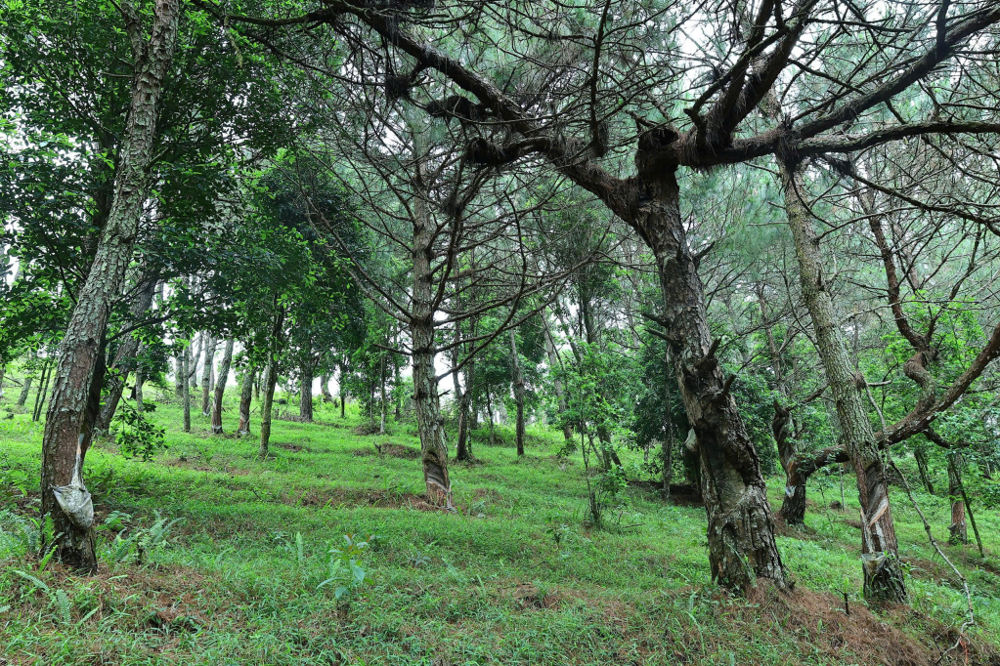

Vẻ đẹp thiên nhiên
Cao Xiêm thuộc huyện Bình Liêu, tỉnh Quảng Ninh, có độ cao khoảng 1.429m so với mực nước biển. Đây là một trong những điểm trekking hấp dẫn nhất miền Bắc với khung cảnh núi non hùng vĩ.
Hành trình lên đỉnh Cao Xiêm đưa du khách đi qua những cánh rừng xanh mát, đồi cỏ rộng lớn và các cung đường uốn lượn giữa đại ngàn.
Từ trên đỉnh núi, du khách có thể ngắm nhìn toàn cảnh Bình Liêu và những dãy núi trùng điệp kéo dài đến tận đường biên giới.

Cao Xiêm là lựa chọn lý tưởng cho những ai yêu thích trekking, săn mây và khám phá thiên nhiên hoang sơ. Mỗi mùa trong năm nơi đây đều mang một vẻ đẹp riêng.
← Quay lại trang chủ